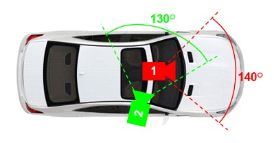
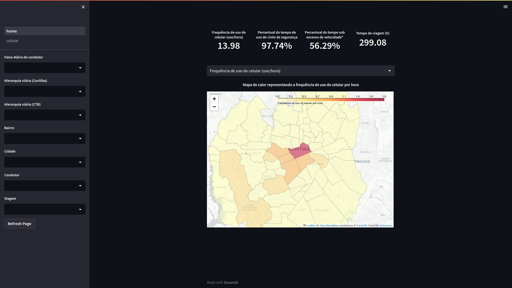

Iniciação científica
Plataforma de coleta
Para realizar a captura das imagens dos contudores e dos dados de GPS para cada viagem efetuada pelos participantes da pesquisa, foi utilizado um conjunto de duas camêras veículares que possuem a geolocalização integrada ao seu sistema.
As camêras foram dispostas internamente ao veículo. A primeira delas aponta para o interior do automóvel, visando coletar as ações como mexer no telefone celular, interagir com painel digital do carro, entre outros. A segunda é responsável por registrar as imagens frontais do veículo, ou seja, tudo que acontece externamente interferindo em cada ação tomada pelo condutor.
Tratamento dos dados
Os dados obtidos da maneira anteriormente descrita, seguem um padrão em que há separações cíclicas de 3 minutos no armazenamento dos vídeos e os dados de GPS são disponibilizados em apenas um arquivo txt.
Com isso, foram desenvolvidos utilizando as linguagens C, Shell e Python, softwares responsáveis por concatenar os vídeos de cada viagem realizada pelo condutor, junto da seção de dados do GPS refentes a devida deslocamento.
Acesso ao código fontePainel de visualização
Finalizado as etapas de coleta e tratamento dos dados, esses são disponibilizados aos estudos naturalísticos de direção, mais especificamente no âmbito brasileiro. Portanto são observados os comportamentos de cada condutor, e registrados em planilhas CSV.
O acesso as planilhas que documentam os comportamentos de cada condutor, permite que dados sejam extraídos, posteriormente apresentados em resultados finais no painel de visualização.
O painel foi desenvolvido em python junto da biblioteca streamlit, que permite a apresentação de resultados em uma página web hospedada pelos mesmos. Além disso, a biblioteca conta com funções que apresentam de forma dinâmica os banco de dados, podendo ser através de gráficos, imagens ou mapas interativos.
 Acesso ao painel de visualização do projeto - Atualmente fora do ar :(
Acesso ao painel de visualização do projeto - Atualmente fora do ar :(